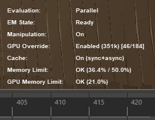
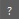
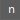
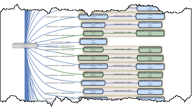
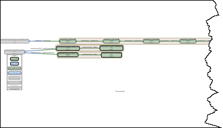
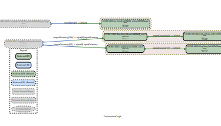
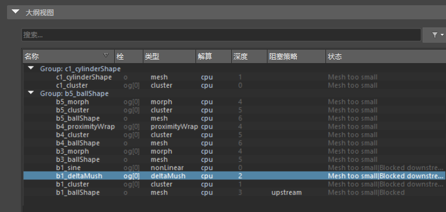
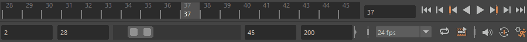
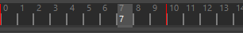

打开“解算工具包”(Evaluation Toolkit)
通过“解算工具包”(Evaluation Toolkit)，可分析和了解如何以最佳方式使用并行解算模式，从而加速动画运行。激活“解算工具包”(Evaluation Toolkit)中的选项以操纵“解算管理器”(Evaluation Manager)的所有方面，其中包括启用调试模式和输出。另请参见使用解算模式测试性能(Test Performance with Evaluation Modes)。
配置(Configuration)
包含许多设置，支持您配置“解算工具包”(Evaluation Toolkit)所提供的工具的行为。
- Graphviz 选项(Graphviz Options)
-
- 使用 Graphviz 系统安装(Use Graphviz system installation)
-
激活此选项后，将使用系统的 Graphviz 安装，而不是 Maya 随附提供的安装。注： 为了让 Maya 找到 Graphviz 安装，请确保包含 Graphviz 可执行文件的 Graphviz 文件夹位于 PATH 环境变量中。请参见标准路径。
- 显示 Graphviz 版本(Show Graphviz Version)
-
显示 dot -v 命令的输出，该命令用于报告 dot 命令软件版本。
1) 模式(1) Modes)
从“解算模式”(Evaluation Mode)菜单中选择适当的解算模式。
- “解算模式(Evaluation Mode)”菜单
-
- DG
- 对您的场景使用基于依存关系图的解算模式。（另请参见依存关系图。）在 Maya 2016 之前，这是默认的解算模式。
- 串行(Serial)
- 使用解算管理器，但是将解算限制到单个核心（串行解算）。使用“串行”(Serial)可排除场景故障，因为它使场景保真度优先于性能，以便您可以找出解算错误。
注： 与“DG”模式相比，有时场景在“串行”(Serial)解算模式下运行得更慢。这是因为与“DG”模式相比，“串行”(Serial)模式对更多的节点解算。由于此详细解算，如果场景在“串行”(Serial)模式下看起来不正确，则它不大可能在“并行”(Parallel)模式下正常工作。
有时“串行”(Serial)模式下的不正确解算是由自定义插件导致的。
- 串行(未缓存)(Serial (uncached))
- 与“串行”(Serial)（如上所述）类似，但未缓存，将重新确定每个帧中的解算顺序。不建议使用。
- 并行(Parallel)
- 并行解算并使用所有可用的核心对场景解算。如果此模式导致场景问题，则禁用它并返回到上一标准：DG 解算模式。
请参见分析场景以提高性能。
此模式在默认情况下处于活动状态。 - GPU 覆盖(GPU Override)
- 与解算管理器一起在“串行”(Serial)或“并行”(Parallel)解算模式下加速变形。如果场景具有标准 Maya 变形器并且网格几何体是密集的，则这可以提高性能。结果将基于场景中的变形器和网格密度而变化。
注： “GPU 覆盖”(GPU override)仅适用于 Viewport 2.0，对 OSX 上的 Quadro 4000 显卡不起作用。
- 有关“GPU 覆盖”(GPU override)的技术说明，请参见使用并行 Maya。
- 在解算图中包括控制器(Include Controllers in Evaluation Graph)
- 构建时在解算管理器中激活/禁用预填充控制器机制。
- 高级(Advanced)
-
注： 与其他“解算工具包”(Evaluation Toolkit)设置不同，对高级设置所做的更改在 Maya 重新启动后仍会保留。
-
- 操纵(Manipulation)
- 切换解算管理器用于操纵。仅在“串行”(Serial)和“并行”(Parallel)模式下有效。
- 减少图表重建(Reduce Graph Rebuild)
- 切换某些设置关键帧工作流（例如，首次设置未设置动画属性的关键帧、向静态曲线添加新的不同关键帧或撤消这些操作）是否使图表无效。使用此选项可以避免在设置先前静态属性的动画时重建图表。
- 默认情况下，此选项处于启用状态。
- 空闲操作(Idle Action)
- 用于禁用自动缓存解算。“空闲操作”(Idle Action)设置可用于设置是否执行缓存解算：
设置 行为(Behavior) 空闲重建和准备操纵器(Idle Rebuild and Prepare for Manip) 此设置为建议的默认设置。 禁用(Off) 当 Maya 处于空闲状态时不会发生任何操作。若要触发图表重建并构建缓存，必须执行一项操作，例如更改时间。 空闲重建(Idle Rebuild) 仅当图表失效时，才重建缓存。仅使用解算管理器重建并准备解算，但不会进行划分或调度。若要触发划分和调度，需要执行一项操作，例如更改时间。 空闲准备操纵器(Idle Prepare for Manip) 仅当构建图表时，或当图表划分无效时，才重建缓存。必须手动重建图表。如果启用了缓存，则此操作将重建缓存。
2) 平视显示仪(2) Heads Up Display)
可使用以下平视显示仪 (HUD) 选项在视图面板中显示解算和帧速率信息。有关更多“平视显示仪”(Heads Up Display)选项，请参见平视显示仪 (HUD) 选项(Heads Up Display (HUD) Options)和在视图面板中显示场景信息 (HUD)(Display scene information (HUD) in a view panel)。
- 缓存(Cache)
- 平视显示仪(Heads Up Display) (HUD) 输出。这样可以监视用于缓存进程的资源限制。当“平视显示仪”(Heads Up Display)中的“缓存”(Cache)设置处于活动状态之后，使用以下“缓存”(Caching)部分继续进行缓存操作。
- 解算(Evaluation)
-

指示当前的解算模式。请参见“首选项 > 动画”(Preferences > Animation)中的解算(Evaluation)以更改解算模式。
- 帧速率(Frame Rate)
-
在视口右下角显示当前视图的帧速率（单位：每秒帧数 (FPS)）。默认设置为禁用。
显示的帧速率是刷新帧速率。刷新帧速率表示 3D 视口连续刷新之间的时间。如果在 Maya 中播放或操纵对象，则刷新帧速率会更新。
播放帧速率受“实时”(Real-Time)与“播放每一帧”(Play Every Frame)设置的影响。显卡 vsync 设置（用于将视口显示与显示器刷新速率同步，并且可能是视口数增加时帧速率可能会降低的原因）。
3) 调试(3) Debugging)
使用此区域中的这些选项，可以确定场景的问题区域。
- EM 验证(EM Validation)
- 切换用于跟踪无效解算图路径的跟踪对象。它将记录违反解算图中所示依存关系的数据访问。这些意外访问可能会导致解算出错且不稳定，如崩溃。
- 输出文件包含在每个播放帧期间检测到的缺少的依存关系。这仅适用于“串行”(Serial)模式。
- 默认情况下，跟踪结果将保存在 Maya Temp 目录下的 _MayaEvaluationGraphValidation.txt 文件中，但您可以指定其他位置。使用 getenv("TEMP") MEL 命令查找计算机上的临时目录。
- “计算的节点”(Computed Nodes)跟踪
- 通过切换输出所计算节点的跟踪对象，对计算路径执行高级跟踪。这仅适用于“DG”和“串行”(Serial)模式。
- 跟踪结果将保存在 Maya 运行时目录下的 _Trace_Compute.txt 文件中。使用 getenv ("MAYA_LOCATION") MEL 命令查找该运行时目录。
- 启动分析器(Launch Profiler)
- 打开分析器(Profiler)。这一工具通过记录和描述每个重要事件（例如，解算任务）消耗的时间量，有助于找出场景中的性能瓶颈。
- 启动分析窗口(Launch Analytics window)
- 打开“分析对象”(Analytics Objects)窗口，该工具通过对场景运行脚本并报告找到的内容来帮助分析一个或多个场景的内容。有关可运行测试的描述，请参见分析对象窗口(Analytics Objects Window)。
- 启动场景绒布窗口(Launch Scene Lint window)
- 打开“场景绒布”(Scene Lint)窗口，该工具可优化场景性能。选择进程来调试场景（或选择“全选”(Select All)以全部运行），然后单击“运行选定项”(Run Selected)。
- 运行选定进程后，单击“应用所有选定修复”(Apply All Selected Fixes)以使用建议的改进。单击“清除结果”(Clear Results)以从内存中擦除先前的进程。
注： 由于场景中的节点依存关系无效而从“安全”(Safe)模式还原为“串行”(Serial)模式的“解算管理器”(Evaluation Manager)与由于在“首选项”(Preferences)窗口中设置为“串行”(Serial)而还原为“串行”(Serial)模式的“解算管理器”(Evaluation Manager)之间存在差异。检查动画首选项（在“设置”下）(Animation (Settings) preferences)窗口中，“解算”(Evaluation)是否设置为“并行”(Parallel)。
-
选项 描述 flat-animation 标识可被单个静态值替换的平坦动画曲线。 opencl-no-gpu 标识可能会使用较慢 OpenCL 路径的任何网格。 animated-expression 在场景中搜索“已设置动画”(animated)属性值设置为 true 的表达式。 smooth-mesh 在场景中搜索已启用“平滑网格预览”(Smooth Mesh Preview)的网格。 floating-curves 从场景中删除任何浮动曲线。 caching-status 提供有关可能的缓存播放问题的信息。 GPU-Deformation 提供有关 GPU 变形问题的信息。 unused-expression-outputs 在场景中搜索未向任何项提供输入的表达式。 evaluation-manager-status 提供有关可能影响解算管理器的问题的信息。 mesh-zero-vertices 提供有关可能影响解算管理器的问题的信息。 NURBS-tessellation 确保有效细分 NURBS。 - 解算图检查(Evaluation Graph Inspection)
- 此部分提供了一组工具，可用于了解解算图和调度图的构造方式。
-
- 要检查的节点(Nodes to Inspect)
- 对于“解算图检查(Evaluation Graph Inspection)”部分的每个工具，您可以选择检查整个图表，此时从下拉菜单中选择“全部”(All)；也可以选择只检查图表的子集，此时选择“选定”(Selected)。
- 如果选择“选定”(Selected)，将会显示另一个标记为“级别深度”(Levels Deep)的字段。显示图表信息时，您通常会对节点之间的连接感兴趣。“级别深度”(Levels Deep)值告知工具从选定节点起要包含在输出中的步数。
- 在此上下文中，“步数”表示“从一个节点到另一个节点必须在图表中遍历的连接数”。例如，如果图表连接为 A -> B -> C，则节点 B 距离 A 和 C 的深度均为 1，C 距离 A 的深度为 2。
- 为清晰起见，下面介绍的功能假定您选择的是“全部”(All)选项。
-
- 图形输出(Graphical Output)
- 此部分中的工具将以 PDF 或 DOT 格式提供输出，以可视化解算图或调度图。此可视化类似于您在节点编辑器中看到的依存关系图的效果。
格式(Format) 选择要生成的输出的类型。如果设置 PDF，则图表将发送到 .pdf 文件。如果设置 DOT，则图表将发送到 .dot 文件。在这两种情况下，该工具将尝试在所生成文件的默认应用程序中打开文件，以便您可以立即查看。例如，在 Adobe Acrobat 中打开 .pdf 文件，在 graphviz 中打开 .dot 文件。 如果选中“传递归约”(Transitive Reduction)复选框，则会尝试在显示的图表中减少不必要的连接数。虽然生成过程所需时间可能长得多，但结果输出会更清晰。
输出文件(Output file) 此字段显示文件的创建位置。默认情况下，它存储在 MAYA_LOCATION 目录中。输入新文件名，或浏览到新目录以更改位置。文件名的扩展名始终反映当前选定的“格式”(Format)（.pdf 或 .dot）。 可视图表(Visual Graph) 按下“显示”(Show)按钮时，将以选择的格式生成解算图的可视表示，并且将在相应文件类型的默认应用程序中打开结果。 “添加脏栓”(Add Dirty Plugs)选项包括每个节点中被“解算管理器”(Evaluation Manager)设置为脏的所有栓的列表。通常，您不需要此细节量，但它可用于发现图表中缺少的属性依存关系
可视化调度图(Visualize Scheduling Graph) 按下“显示”(Show)按钮时，将以选择的格式生成调度图的可视表示，并且将在相应文件类型的默认应用程序中打开结果。 调度图与解算图不同，因为前者将多组节点组合在一起作为一个组进行解算。例如，不可见性解算器将所有不可见节点聚合在一起建立簇，并且不执行任何其他操作，而是将其作为一个整体进行解算。
使用“添加簇内容”(Add Cluster Contents)选项可以将簇节点从显示其包含的节点计数切换为按名称显示所有节点的列表。如果要查看特定自定义解算器将哪些节点聚合在一起建立簇，这会很有用。
- 文本输出(Text Output)
- 此部分中的工具将以 JSON 或纯文本格式提供输出以可视化解算图或调度图。
格式(Format) 有两种类型的输出。JSON 格式比较详细；以键/值形式描述所有节点信息和关系。“摘要”(Summary)格式将信息压缩为比较简洁的显示内容以便快速参考 输出位置(Output Location) 您可以选择将结果直接发送到“脚本编辑器”(Script Editor)，也可以选择将结果发送到外部“文件”(File)。脚本编辑器非常适用于快速检查场景的部分内容；外部文件最适合脱机解析和解释结果。 输出文件(Output File) 仅当您在“输出位置”(Output Location)中选择了“文件”(File)选项时，此字段才会处于活动状态。它显示文件的创建位置。默认情况下，它将位于 MAYA_LOCATION 目录中。输入新文件名，或浏览到新目录以更改位置。 解算节点(Evaluation Nodes) 打印选定节点或整个场景（如果未选中任何对象）上的解算节点和连接的列表。 激活“显示脏栓”(Show Dirty Plugs)将打印在解算和计算之前“解算管理器”(Evaluation Manage)设置为脏的栓的列表。
解算节点(Evaluation Nodes) 按下“显示”(Show)按钮时，将以选择的格式生成解算图中所有节点的列表。这通常意味着已设置动画或作为控制器的所有节点。 使用“添加脏栓”(Add Dirty Plugs)选项可以包括每个节点中被“解算管理器”(Evaluation Manager)设置为脏的所有栓的列表。
节点调度类型(Node Scheduling types) 按下“显示”(Show)按钮时，将显示解算图中节点的调度类型。类型包括“并行”(Parallel)、“串行”(Serial)、“全局序列化”(Globally serialize)和“不受信任”(Untrusted)。有关详细信息，请参见使用并行 Maya(Using Parallel Maya)。 调度图(Scheduling Graph) 按下“显示”(Show)按钮时，将以选定格式显示调度图的内容。 调度图与解算图不同，因为前者将多组节点组合在一起作为一个组进行解算。例如，不可见性解算器会将所有不可见节点聚合在一起建立簇，并且不执行任何其他操作，而是将其作为一个整体进行解算。
使用“添加簇内容”(Add Cluster Contents)选项可以包含调度的所有簇中的节点集。如果要查看特定自定义解算器将哪些节点聚合在一起建立簇，这会很有用。
- 场景简化(Scene simplification)
- 检索选定对象的最小依存关系。
-
- 选择最小场景(Select minimal scene)
- 使用此选项可确定对选定对象进行解算所需的一切。
- 移除最小场景以外的所有对象(Remove all except minimal scene)
- 删除上述最小场景选择选项视为非重要的每个对象。
重要： 数据丢失！切勿在激活此选项后意外保存该版本的场景。
- 动态属性(Dynamic Attributes)
- 连接的动态属性有时会创建虚拟依存关系，从而阻止并行操作，这将抵消通过并行解算实现的任何性能增益。使用这些工具可以显示这些动态属性类型之间的连接：
-
- 打印附加连接(Print extra connections)
- 单击“打印”(Print)可显示在动态属性之间发现的连接的列表。结果将显示在脚本编辑器(Script Editor)中。
- 移除附加连接(Remove extra connections)
- 此选项仅用于调试目的，因为它旨在帮助您了解移除附加依存关系后可能实现的性能增益。由于此选项是一种具有攻击性的工具，可能会改变解算输出，因此请慎用。
重要： 数据丢失！切勿在激活此选项后意外保存该版本的场景，因为数据将会丢失。
- 场景简化(Scene simplification)
- 检索选定对象的最小依存关系。
-
- 选择最小场景(Select minimal scene)
- 使用此选项可确定对选定对象进行解算所需的一切。
- 移除最小场景以外的所有对象(Remove all except minimal scene)
- 删除上述最小场景选择选项视为非重要的所有对象。
重要： 数据丢失！切勿在激活此选项后意外保存该版本的场景。
4) 自定义解算器(4) Custom Evaluators)
单击每个自定义解算器旁边的复选框，以激活自定义解算。
使用 （问号）按钮可查看关联的自定义解算器支持的配置选项。请参见解算器命令参考中的 -c / -configuration 标志。
使用 （“i”）按钮可查询与关联的自定义解算器相关的信息。
使用 （“n”）按钮可打开一个窗口，用于查看由关联的自定义解算器声明的节点。
有关“不可见性”(invisibility)、“冻结”(frozen)、“动力学”(dynamics)和“变形器”(deformer)解算器的背景信息，请参见解算器参考(Evaluator Reference)。使用并行 Maya 文档中提供了更多技术详细信息。
| 自定义解算器 | 用途 |
|---|---|
| 不可见性(invisibility) | 从解算中移除不可见的节点（及其所有驱动者）。有关不可见性解算器的详细信息，请参见解算器参考(Evaluator Reference)。
注： 无论是否已启用该解算器，场景看起来都相同。
有关 “不可见性”(invisibility)解算器的详细信息，请参见解算器参考(Evaluator Reference)。
|
| 冻结(Frozen) | 处理旨在控制对/不对场景的哪个部分进行解算的“冻结”工作流。
有关“冻结”(frozen)解算器的详细信息，请参见解算器参考(Evaluator Reference)。 |
| curveManager | 在解算图中添加其他节点，以便您可以使用并行解算和 GPU 变形进行操纵，从而提高响应速度。此外，由于静态节点已包含在解算图中，因此可减少解算图重建。有关 curveManager 解算器的详细信息，请参见解算器参考(Evaluator Reference)。 |
| cache | 构成缓存播放的基础。有关详细信息，请参见使用并行 Maya(Using Parallel Maya)。 |
| timeEditorCurveEvaluator | 处理时间编辑器的自定义曲线解算要求 |
| dynamics | 用于对解算要求不正规的动力学节点正确解算。
有关 dynamics 解算器的详细信息，请参见解算器参考(Evaluator Reference)。 |
| ikSystem | 管理由多控制柄 IK 系统引起的复杂解算。 |
| disabling | 禁用解算管理器（用于调试目的）。 |
| hik | 提升 HumanIK 绑定的性能。 |
| reference | 改进已加载/卸载引用的场景的性能。 |
| deformer | 支持对受支持的变形器执行 GPU。deformer 解算器实现了“GPU 覆盖”(GPU Override)选项。
有关“变形器”(deformer)解算器的详细信息，请参见解算器参考(Evaluator Reference)。 |
| cycle | 展开循环簇以增加并行操作的机会并提高性能。场景中存在大型循环簇时，很可能会达到最佳的性能提高效果。 |
| transformFlattening | 改进长变换层级的性能。 |
| pruneRoots | 通过一起调度各个小任务以降低调度开销，改进性能 |
5) 动力学(5) Dynamics)
- 模式(Mode)
- 从以下五个选项中进行选择：
名称 功能 禁用(Disabled) 只要场景中存在活动的动力学节点，便禁用并行解算/解算管理器。 旧版 2016(Legacy 2016) 重现 2016 版本的默认设置，方法是：只要不受支持的节点显示在场景中，便禁用解算。 以下节点类型不受支持：
- Nucleus
- pointEmitter
- rigidSolver
- rigidBody
- particle
- geoConnector
- field
- fluidShape
从其中派生的任何类型也是如此。
受支持 对受支持的动力学节点实现复杂解算，只要不受支持的节点显示在场景中，便禁用并行解算/解算管理器。 以下节点类型不受支持：
- rigidSolver
- rigidNode
- particle（除非也是 nBase）
- fluidShape
- fluidEmitter
- dynHolder
- collisionModel
- dynController
- dynGlobals
- spring
- membrane
从其中派生的任何类型也是如此。
全部(不支持)(Everything (NOT SUPPORTED)) 使用所有节点，甚至是有问题的节点，因为此模式不使用黑名单。 自定义(不支持)(Custom (NOT SUPPORTED)) 此模式允许您尝试以下选项的不受支持组合。
- 高级(Advanced)
-
- 禁用的节点(Disabling Nodes)
- 导致并行解算/解算管理器被禁用的节点集。
- 已处理的节点(Handled Nodes)
- 由用于处理解算的动力学解算器读取的节点集。
- 操作(Action)
- 选择动力学解算器对已处理的节点执行的操作。
名称 功能 无(None) 忽略节点。 解算(Evaluate) 一旦需要满足特殊解算要求，便实现解算。 冻结(Freeze) 导致动力学解算器以当前状态冻结其处理的所有节点。不执行解算，节点不受影响；这是运行最快的方法。
6) GPU 覆盖(6) GPU Override)
在脚本编辑器(Script Editor)中显示以下报告。有关此解算器的描述，请参见解算器参考(Evaluator Reference)；有关“GPU 覆盖”(GPU Override)的技术信息，请参见使用并行 Maya(Using Parallel Maya)。
- 活动变形链(Active deformation chains)
- 编译由 GPU 解算器处理的变形链（即一个网格以及至少一个变形器）的列表。
- 网格信息(Mesh information)
- 打印每个网格当前的 GPU 变形支持信息。如果该网格当前由 GPU 变形器处理，则其变形链将显示在列表中。反之，列表会显示将其排除在外的原因。
- 选定节点状态(Selected nodes status)
- 打印选定节点当前的 GPU 变形支持信息。如果该节点当前由 GPU 变形器处理，则其变形链将显示在列表中。反之，列表会显示将其排除在外的原因。
- 簇
- 打印由变形器解算器处理的每个簇的节点列表。每个变形器链都有各自的簇。
- 图形输出(Graphical Output)
-
将“GPU 覆盖”(GPU Override)区域的“图形输出”(Graphical Output)部分展开，以生成 GPU 变形器图，这些图使用 Graphviz 将通过 deformerEvaluator -c 命令提供的信息显示为已连接图。
-
- 格式(Format)
- 选择输出文件格式：PDF、SVG、PNG 或 DOT。
- 输出文件(Output File)
- 输入输出文件的名称。单击文件夹图标 可浏览到输出位置。
- 包括栓(Include Plugs)
-

“包括栓”(Include plugs)显示完整图表
- 如果不需要使用输入和输出栓标记的节点之间的连接，请禁用此选项。默认情况下，此选项处于启用状态。
- 仅选定对象(Selected Only)
-

“仅选定对象”(Selected only)显示精简形式的图表
- 将图表限制到选定节点。
- 忽略通过(Omit Passthroughs)
-

“忽略通过”(Omit Passthroughs)显示更有限的图表视图
- 将图表限制到选定节点，并忽略任何通过节点。
- 可视化变形图(Visualize Deformation Graph)
- 单击“显示”(Show)按钮以创建图。
- 重复使用(Reuse)
-
- 变形器(Deformers)
- 可用于控制 GPU 缓冲区的重用阶段。
选项 行为 从不(Never) 节点永远不会重用。 即时(Immediate) 该设置为默认设置。如果节点在重新划分后仍然有效，则会重用这些节点。 始终(Always) 在重新划分期间和之后，所有节点都保留在内存中，以便以后重用。 - 汇(Sinks)
-
选项 行为 从不(Never) 节点永远不会重用。 即时(Immediate) 该设置为默认设置。如果节点在重新划分后仍然有效，则会重用这些节点。 始终(Always) 在重新划分期间和之后，所有节点都保留在内存中，以便以后重用。
- 调试(Debug)
-
- 限制最小几何体大小(Limit Minimum Geometry Size)
- 禁用此选项可移除 Maya 几何体顶点要求，并允许所有几何体使用 GPU。在 Maya 中，将基于检测到的显卡设置最小数量的顶点。使用此选项可在 Maya 会话的持续时间内暂时覆盖此限制。
- 允许下载(Allow Downloads)
- 激活此选项将支持 GPU 下载。默认情况下，此选项处于启用状态。
- 拒绝允许下载(Allow Download Rejections)
- 激活此选项后，需要 GPU 下载的图表部分将根据审核被拒绝。默认情况下，此选项处于启用状态。
- 大纲视图(Outliner)
-
GPU“大纲视图”(Outliner)可用于跟踪 deformerEvaluator 中的节点及其阻塞策略的状态（如果有）。

GPU 大纲视图
- GPU“大纲视图”(Outliner)具有以下功能：
- 显示解算器中的节点及其分组方式。
- 显示哪些节点使用 GPU 进行解算，导致下载到 CPU，哪些节点使用 CPU 进行解算。
- 具有过滤器，因此可以限制符合特定条件的节点的视图，例如：
- 匹配通配符名称
- 仅属于网格
- 仅使用 GPU 进行解算
- 对通过节点进行过滤
- 显示上传/下载状态
- 设置了阻止策略
- 对组使用目标网格的名称
- 打开、新建、引用或导入文件时更新。
- 在“大纲视图”(Outliner)上单击鼠标右键以打开上下文菜单，该菜单允许您选择节点、将其可视化为图表或设置阻塞策略。
-
名称 功能 名称(Name) 显示分组在此节点下的所有元素的目标网格的名称。 栓(Plug) 节点栓。 类型(Type) 关联的变形器。 解算(Eval) 执行节点解算的位置；使用 GPU 进行解算，导致下载到 CPU，以及/或者使用 CPU 进行解算。 深度(Depth) 链中的顺序。 阻塞策略(Blocking policy) 如果已对节点应用了阻塞策略。 状态(Status) 阻塞策略的当前上传/下载状态。
7) 选择(7) Selection)
选择以下内容：
- 受解算管理器控制的节点(Nodes under evaluation manager control)
- 将当前选择更改为仅限于受解算管理器控制的节点。未直接或间接设置动画的节点不包含在该集中。
- 上游节点(Upstream nodes)
- 从当前选择中选择目前受解算管理器控制的、位于上游的所有节点。在该操作之前选择的节点取决于在该操作之后选择的上游节点。
- 下游节点(Downstream nodes)
- 从当前选择中选择目前受解算管理器控制的、位于下游的所有节点。在该操作之后选择的下游节点取决于在该操作之前选择的节点。
上游节点与下游节点
连接到解算图中的所有节点被视为“上游”或“下游”。
在下图中，您可以看到上游节点与下游节点如何交互。
- nurbsCone1_translateX => nurbsCone1
- nurbsCone1_translateX 是 nurbsCone1 的上游
- nurbsCone1 需要 nurbsCone1_translateX
- nurbsCone1_translateZ => nurbsCone1
- nurbsCone1 是 nurbsCone1_translateZ 的下游
- nurbsCone1 取决于 nurbsCone1_translateZ
8) 循环(8) Cycles)
有关循环及其在解算过程中所起的作用，请参见使用并行 Maya(Using Parallel Maya)。
完整图形(Full Graph)
创建 .PDF 和 .DOT 文件以显示场景的当前解算图。
- 输出文件夹(Output Folder)
- 键入保存输出图形的文件夹对应的路径。单击“生成”(Generate)可创建输出图形。单击文件夹图标
 可打开文件浏览器，您可从中导航到相应的文件夹。
可打开文件浏览器，您可从中导航到相应的文件夹。
- 输出基础文件名(Output base file name)
- 显示基础文件名。默认值为 _EvaluationGraph_。
- 生成的文件会将 .DOT 和 .PDF 添加到所选的基础文件名。
- 生成(Generate)
- 使用当前解算图创建 Graphviz .DOT 文件。如果执行传递归约(Perform transitive reduction)选项处于活动状态，将额外创建一个包含传递归约（由 Graphviz tred 命令执行）输出的 .DOT (.tr.dot) 文件。然后，该 .DOT 文件将转化为 PDF 文件（使用 Graphviz dot 命令），并使用系统的默认 PDF 阅读器应用程序打开。
- 执行传递归约(Perform transitive reduction)
- 激活该选项可执行传递归约，以便输出图形移除多余的依存关系，以清理输出图形的混乱状况。
注： 对于大型场景，此过程可能需要很长时间。
- 在完整图形中标记簇(Mark clusters in full graph)
- 激活该选项可在输出图形中亮显解算簇。
- 开放(Open)
- 打开新创建的 PDF 文件。
循环图(Cycle Graph)
此部分提供了用于调查场景中循环簇的工具。循环簇按顺序进行解算，因此，对于大型循环簇，并行操作的可能性会降低，并且可能无法有效使用所有 CPU 核心。大型循环簇限制了常规场景性能，将其拆分开可提高性能。
- 循环簇(Cycle clusters)字段
- 单击“生成”(Generate)可在此字段中显示当前场景内的循环簇的列表，并按簇中的节点数排序（数量最多的排在最前面）。所含节点少于选定阈值的簇不会包括在列表中。
- 将打印每个簇的节点数和第一个节点。可以使用 evaluationManager 命令查询完整的簇。
- 循环大小阈值(Cycle Size Threshold)
- 定义要包含的循环簇的最小节点数。默认值为 100。
注： 小循环可能与性能分析不太相关。
- 刷新循环簇列表
- 单击可更新循环列表。
- 根据选定节点选择循环
- 选择包含选定节点的循环。
- 列出选定循环簇中的节点

- 显示循环簇中的所有节点。
- 最短路径(Shortest Path)
-
如果在当前选定的簇中同时指定了源节点和目标节点，这两个节点将在输出图形中亮显为绿色。从源节点到目标节点的路径为蓝色，反之为红色。
注： 使用此设置时取消激活传递归约，因为它可从这些路径中移除连接。 - 最短路径(Shortest Path)
-
- 源节点
- 单击“拾取选定对象”(Pick Selected)可设置“源节点”(Source node)。
- 目标节点(Destination node)
- 单击“拾取选定对象”(Pick Selected)可设置“目标节点”(Destination node)。
- 仅最短路径(Shortest path only)
- 激活该选项后，仅显示最短路径上的节点。
- 输出文件夹(Output Folder)
- 键入保存循环簇图形的文件夹对应的路径。单击“生成”(Generate)可创建该图形。单击文件夹图标 可打开文件浏览器，您可从中选择目标文件夹。
- 输出基础文件名(Output Base File Name)
- 显示基础文件名。默认值为 _CycleCluster_。
- 执行传递归约(Perform transitive reduction)
- 激活该选项可对输出图形执行传递归约，从而移除多余的依存关系，以清理输出图形的混乱状况。
依存关系
此区域支持您生成图形以显示两组节点之间的依存关系。这有助于说明为什么不应相互依赖的两组节点实际上彼此具有依存关系。
- 上游/下游节点(Upstream/Downstream nodes)
- 选择要用作“上游/下游节点”(Upstream/Downstream nodes)列表的节点，然后单击“选择选定对象”(Choose Selected)以使用这组节点。
- 输出文件夹(Output Folder)/输出基础文件名(Output Base File Name)
- 键入保存该图形的文件夹对应的路径。单击“生成”(Generate)可创建该图形。单击文件夹图标 可打开文件浏览器，您可从中导航到相应的文件夹。
- 执行传递归约(Perform transitive reduction)
- 激活该选项可对输出图形执行传递归约，从而移除多余的依存关系，以清理输出图形的混乱状况。
9) 验证(9) Validation)
- 性能(Performance)
- 在“DG”、“串行”(Serial)和“平行”(Parallel)模式下，对当前场景运行 emPerformanceTest。运行这些测试时，将显示三种模式（DG、“串行”和“并行”）中每种模式的结果。这些结果也会显示在脚本编辑器(Script Editor)中。此测试可用于通过不同的解算模式获取场景的基准。
- EM 正确性(EM Correctness)
- 对当前场景运行 emCorrectnessTest。正确性测试在“串行”(Serial)模式（不含 GPU 变形器解算）和“并行”(Parallel)模式（含和不含 GPU 变形器解算）下运行动画，并对解算输出进行比较以验证正确性。运行此测试时，将显示每种适用模式的结果。您也可以在脚本编辑器(Script Editor)中查看结果。
- 缓存(Caching)
- 此区域包含可在当前场景中运行的缓存正确性测试列表。单击“细节”(Details)，可在新窗口中查看结果（也会显示在脚本编辑器(Script Editor)中。）
缓存正确性测试
“运行 VP2 Hdw”(Run VP2 Hdw)和“运行 VP2 Sft”(Run VP2 Sft)是在并行解算模式 (EMP) 下播放场景以获得已解算值的缓存正确性测试。稍后，它们将启用缓存，重新运行播放并确保缓存值与 EMP 值一致。
| 术语 | 描述 |
|---|---|
| 运行 BG CI AA +(Run BG CI AA +) | 检查后台解算，以确保为已设置动画的属性 (AA) 保持解算上下文。
已设置动画的属性 (AA) 确保已设置动画的属性（即，节点上已设置动画（非静态）的栓）位于相同上下文中。 |
| 运行 BG CI AN +(Run BG CI AN +) | 检查后台解算，以确保为已设置动画的节点保持解算上下文。不仅检查已设置动画的属性，还检查已设置动画的节点上的任何属性（即，至少有一个栓已设置动画）。 |
| 运行 VP2 Hdw(Run VP2 Hdw) | 将缓存结果与正常解算进行比较；Viewport 2 硬件缓存模式。 |
| 运行 BG CC(Run BG CC) | 将后台解算结果与常规解算结果进行比较。 |
| 运行 DB All(Run DB All) | 将缓存结果与正常解算进行比较；缓存所有受支持节点类型的数据块。 |
| 运行 VP2 Sft(Run VP2 Sft) | 将缓存结果与正常解算进行比较；Viewport 2 软件缓存模式。 |
| 运行 DB Shp(Run DB Shp) | 将缓存结果与正常解算进行比较；缓存仅受支持形状类型的数据块。 |
| 运行 BG CI SA | 检查后台解算，以确保为边和已设置动画的数据保持解算上下文。此测试范围广泛，因为它将检查所有内容，甚至包括访问静态节点（即，没有任何动画的节点）。测试范围越广，报告的错误越多。 |
10) 报告(10) Reports)
此区域包含您可为场景生成的报告。目前，只有一个关于表达式的报告。结果将显示在脚本编辑器(Script Editor)中。
- 表达式(Expressions)
- 如果处于活动状态，则报告表达式节点的总数以及安全和不安全的表达式节点数。
- 安全的表达式可以拥有多个输出，但这些输出必须是其输入的函数。
- 安全的表达式仅输出其输入（正在通过 DG 连接读取的输入）的函数，且不调用数学函数除外的命令。这些节点不能产生任何副作用，以便与其他节点同时解算。无法将不安全的表达式与其他任何节点并行解算。不安全的表达式无法与其他任何节点并行解算
- 此报告将检查可能影响场景性能的不同表达式类型。
- 单击“生成”(Generate)可创建该报告。
- 性能(Performance)
- 如果处于活动状态，则运行 sceneLint() 命令，并在 SceneLint 工具中执行检查。
11) 冻结(11) Freezing)
使用以下选项可激活或禁用部分 DAG（有向非循环图），从而提高性能。激活“显示传播”(Explicit Propagation)后，不会调度设置为冻结状态（直接或间接）的所有对象进行解算，这将提高播放性能。如果改为选择“运行时传播”(Runtime Propagation)，则部分图形仍将进行调度，但在运行时会跳过。
仍将调度已设置动画的冻结状态，因为必须先对其进行解算，然后才能确定它们是否为必需。
- 冻结传播(Frozen Propagation)
- 激活该选项后，可将所有已冻结的引用节点设置为强制其所引用的节点也处于冻结状态，而不考虑对这些节点应用的任何编辑。
-
- 运行时(Runtime)
- 此设置仅在运行时启用下游删减。仍将调度冻结节点，但在发现这些节点处于冻结状态之后，会跳过所有下游解算。
- 显式(Explicit)
- 激活该选项等效于启用冻结解算器。它使用冻结选项防止通过直接或间接冻结对未解算的节点进行任何调度。此设置可以最大程度地加快播放速度。
- 下游/上游冻结模式(Downstream/Upstream freeze mode)
- 用于指定“冻结”(Freeze)模式的严格性。选择“上游”(Upstream)或“下游”(Downstream)。
-
无(None) 无下游/上游传播。 当所有父对象冻结时(When All Parents are Frozen) 仅当下游/上游节点的所有上游/下游节点处于冻结状态时，才会冻结该下游/上游节点。 始终(Always) 冻结节点中的所有下游/上游节点也处于冻结状态，即使它们具有其他非冻结输入也如此。 - 冻结不可见对象(Freeze Invisible)
- 沿 DAG（有向非循环图）层次将冻结状态向下传播到所有不可见的子对象。这样可以冻结根节点（使其不可见）及其整个 DAG 层级。如果不使用此选项，则必须分别冻结每个节点。从“节点”(Nodes)或“显示层”(Display Layers)中进行选择，使属于不可见的冻结显示层成员的节点也会冻结。
- 直接冻结的节点(Directly Frozen nodes)
- 单击“选择”(Select)可选择哪些节点已冻结。
- 单击“打印”(Print)可打印已冻结节点的列表。
- 单击“全部解冻”(Unfreeze All)可取消选择已冻结的每个节点。
12) 调度(12) Scheduling)
- 调度类型覆盖(Scheduling type override)
- 通过该选项，我可以使用下面列出的工具，选择要应用于给定类型的所有节点的调度类型覆盖。以下是每种覆盖类型的描述：
调度类型覆盖(Scheduling type override) 描述 无(None) 无调度类型覆盖。这是默认设置。 平行(Parallel) 断言该节点及其使用的所有第三方库是线程安全的。调度器可同时计算此节点的实例与其他节点的实例，不受任何限制。 序列化(Serialize) 断言可以安全地运行此节点以及其他节点的实例。但是，将在同一解算链中按顺序执行此调度类型的所有节点。 全局序列化(Globally serialize) 断言可以安全地运行此节点以及其他节点的实例，但每次仅运行此节点的单个实例。如果该节点依赖于静态状态（如果同时对多个节点实例解算，这可能会产生不可预料的结果），请使用此设置。如果第三方库存储状态，同样的限制可能适用。 不受信任(Untrusted) 断言此节点不是线程安全的，并且在对此节点的实例解算时不会对其他任何节点进行解算。不受信任的节点将延缓到解算计划结束时，并且可能会引入成本高昂的同步操作。 - 注册的节点类型(Registered Node Types)
-
从“注册的节点类型”(Registered Node Types)列表中选择节点类型，然后选择要应用的调度类型覆盖，以指定调度器计划对节点并行解算的时间。单击“刷新”(Refresh) 可更新节点类型(Node Types)列表。
-
- 选定类型覆盖(Override for selected type(s))
-
- 打印(Print)
- 单击“打印”(Print)，可显示您在“注册的节点类型”(Registered Node Types)列表中选择的节点类型上已激活的调度覆盖。
- 设置(Set)
- 单击“设置”(Set)，可为“注册的节点类型”(Registered Node Types)列表中的所有选定节点类型指定在“调度类型覆盖”(Scheduling type override)选项中设置的相同调度类型。
- 选定节点(Selected Nodes)
- 从场景中选择一个节点，然后选择要应用的调度类型覆盖，以指定调度器计划对节点并行解算的时间。
-
- 选定节点类型覆盖(Override for type(s) of selected node(s))
-
打印(Print) 显示当前对场景中每个选定节点的类型激活的调度覆盖。 设置(Set) 为场景中每个选定节点的类型指定在“调度类型覆盖”(Scheduling type override)选项中设置的相同调度类型。
- 用于选定节点的类型(Type used for selected node(s))
-
打印(Print) 显示调度器对场景中每个选定节点使用的实际调度类型，将覆盖考虑在内；或者，如果不存在覆盖，则显示未修改的调度类型。
13) 缓存(13) Caching)
“缓存”(Caching)可使 Maya 仅重画动画中已更改的部分，从而加快动画设置过程。以前，无论更改程度如何，每次更改时，Maya 均需重新计算所有动画数据。
此部分包含用于选择缓存模式的设置，以及用于使缓存无效和清除缓存的控件。有关如何缓存动画的信息，请参见创建动画缓存以提高播放速度。
- 缓存播放(Cached Playback)
- 启用此选项可将动画缓存到内存以提高播放速度。请参见使用“缓存播放”(Cached Playback)以提高播放速度。
- % of RAM
- 移动滑块可指定缓存进程停止时的切断点。使用此设置可以指定专用于“缓存播放”(Cached Playback)（而非 Maya 的所有用途）的内存量（以百分比表示）。
注： 此设置仅影响“缓存播放”(Cached Playback)。但是，增大此设置可能会影响同时在此计算机上运行的其他进程。此外，如果分配的内存太多，使用“缓存播放”(Cached Playback)运行多个 Maya 会话也可能影响性能。
- 达到内存限制时停止缓存(Stop caching at memory limit)
- 激活此选项，以便在达到指定的内存限制时放弃缓存过程（这是默认设置）。
- 如果“缓存播放”(Cached Playback)生成有关内存限制的警告，您可以禁用此选项以覆盖指定的内存限制，以使缓存可以继续。（请注意，禁用此选项可能会导致缓存使用系统的所有可用内存。）
- 若要查看系统的内存状态，请参见“解算工具包缓存”部分中的“内存管理”(Memory Management)区域。
- 首选模式(Preferred Mode)
- 选择缓存模式以确定缓存的内容。如果出现错误，请单击“使缓存无效”(Invalidate cache)和“清除缓存”(Flush cache)并尝试另一种模式。
- 混合缓存(Hybrid Cache)
-
此设置可用于扩展缓存播放以与 GPU 变形混合，从而改善依赖大量 GPU 计算和大型绑定的场景的缓存。注： 此模式还会启用“GPU 覆盖”(GPU Override)设置。但如果禁用此模式，则不会禁用“GPU 覆盖”(GPU Override)。
“混合缓存”(Hybrid Cache)保留并还原 GPU 变形链的输入，而不是在变形后缓存完整的几何体。由于变形器链的输入（几个矩阵、几个动画参数等）通常比要变形的几何体小得多，因此这通常会导致存储的数据较少。这还会为整个动画仅缓存一次原始未变形的静态几何体，并将其保留在 GPU 上，从而导致 CPU 和 GPU 内存之间的传输较小。
几何体保留在 GPU 上可以带来巨大的性能提升，尤其是对于大型几何体，还可以显著减少内存使用。
-
设置 行为 禁用(Disabled) 不使用“混合缓存”(Hybrid Cache)，正常缓存几何体。该设置为默认设置。 平滑网格预览(Smooth Mesh Preview) “混合缓存”(Hybrid Cache)仅适用于至少具有一个网格（使用“平滑网格预览”(Smooth Mesh Preview)）的 GPU 变形的解算簇。 全部(All) “混合缓存”(Hybrid Cache)适用于所有 GPU 变形的解算簇。 - 防止跳帧(Prevent frame skipping)
- 实时播放时激活此选项（请参见“时间滑块”(Time Slider)首选项中的“播放”(Playback)），以确保 Maya 在构建播放缓存时不会跳帧。
- 通常，以实时播放速度播放动画时，Maya 会跳帧以保持速率。但如果要创建播放缓存，您不希望忽略任何帧。
注： 播放缓存完整且时间滑块(Time Slider)填充后，如果缓存播放仍无法达到所需帧速率，跳帧将再次进入活动状态。
- 显示警告消息(Show warning messages)
- 激活此选项，以便在发生禁用缓存或导致缓存出现问题的事件时，在脚本编辑器中显示支持消息。有关可能禁用“缓存播放”(Cached Playback)的情况的详细信息，请参见缓存播放限制(Cached Playback Limitations)和缓存播放不支持的节点(Cached Playback unsupported nodes)。
- 丢弃播放范围之外的帧(Discard frames outside playback range)
-
激活此选项，以便从当前播放范围之外的帧中清除任何缓存数据。这意味着，如果调整播放范围大小，使某些缓存帧不再位于激活的缓存区域内，其缓存的数据将会丢失。
- 缓存平滑网格(Cache smooth meshes)
- 激活此选项可在缓存进程中包含“平滑网格预览”(Smooth Mesh Preview)。
- 默认情况下，“平滑网格预览”(Smooth Mesh Preview)不会缓存，因为这会因细分网格所使用的内存量而显著降低“缓存播放”(Cached Playback)的速度。
- 缓存动力学(Cache dynamics)
- 使用此选项可禁用动态对象缓存。（默认情况下，此设置处于活动状态）
- 使用动力学节点进行缓存时，会将缓存分割为“时间滑块”(Time Slider)上单独的动画和动力学状态行，由蓝色（动画）和粉红色（动力学）线条表示。

动画缓存和动力学缓存显示为两个不同的状态行。
- 缓存填充(Cache fill)
- “缓存填充”(Cache fill)菜单部分可用于控制如何填充缓存。
-
顺序 描述 命令 播放(Playback) 仅在播放情况下填充缓存（前台）。此设置可用于调试存在后台正确性问题的场景。 syncOnly 后台(Background) 仅在后台填充缓存。 警告： 针对包含动力学的场景，未来这将是默认设置。此设置仍在测试中。asyncOnly 播放和后台(Playback & Background) 默认设置。既在播放期间填充缓存，也在执行后台任务时填充缓存。 syncAsync 注：可以在“平视显示仪”(Heads Up Display)(HUD) 中查看“缓存填充”(Cache fill)状态。如果“缓存填充”(Cache fill)菜单设置为：
- “播放”(Playback)，缓存 HUD 将显示“启用(同步)”(On (sync))。
- “后台”(Background)，缓存 HUD 将显示“启用(异步)”(On (async))。
- “播放和后台”(Playback & Background)，缓存 HUD 将显示“启用(同步+异步)”(On (sync+async))。
- 背景填充方向(Background fill direction)
- 此菜单可用于设置 Maya 在后台填充缓存的方向（或顺序）。
顺序 描述 向前和向后(Forward & Backward) 通过双向读取动画来构建缓存。这是默认设置，非常适用于拖动。  向前(Forward) 通过从某个位置起向前读取动画来构建缓存。此设置适用于播放。 向后(Backward) 通过从某个位置起向后读取动画至更改部分来构建缓存。 从动画起点前进(Forward from Animation Start) 从动画起点构建缓存。如果您使用的是插件，请使用此设置。 - 应用自定义模式(Apply custom modes)
- “缓存播放”(Cached Playback)具有多个模式，可优化系统的缓存进程，这些模式在选择缓存模式(Choose a caching mode)中进行了介绍。以下自定义缓存模式用于调试目的：
模式 描述 重新应用首选模式(Reapply Preferred Mode) 这些不受支持的/调试模式在您应用后不会保留在首选项中。使用这些模式完成测试后，使用此设置可重新应用首选的受支持模式。 形状，解算缓存(Shapes, evaluation cache) 获取场景的变换、几何体数据（例如，变换、网格、NURBS（曲线和曲面）、细分曲面、Bezier 曲线、晶格和 baseLattice 形状、灯光、摄影机和图像平面）信息及其直接父对象变换。 视口软件缓存(无回退)(Viewport Software cache (without fallback)) 获取场景的变换、几何体数据（例如，变换、网格、NURBS（曲线和曲面）、细分曲面、Bezier 曲线、晶格和 baseLattice 形状、灯光、摄影机和图像平面），并将其存储为渲染器可读取的格式。 在进行相关转换后，“VP2 软件缓存”(VP2 Software cache)会使用此格式，从而更接近于渲染结果。不同于“解算缓存”(Evaluation cache)，它可避免在从缓存进行还原时执行转换步骤，因此速度更快。它将数据存储在主内存中，这可能是有必要的，也可能没有必要。从缓存进行还原后，仍需将数据发送到 GPU。
注： 此缓存模式仅适用于 Viewport 2.0 视口。其他视口不会正确更新。有关更改视口的信息，请参见显示首选项(Display preferences)中的 Viewport 2.0。VP2 软件缓存数据存储在主内存（即 RAM）中。
视口硬件缓存(无回退)(Viewport Hardware cache (without fallback)) 类似于上述“Viewport 2 软件缓存”(Viewport 2 Software cache)模式，但缓冲区在 GPU 或 VRAM（而非 CPU）上存储为硬件缓冲区。“VP2 硬件缓存”(VP2 hardware cache)将数据直接存储在 GPU 上，这样速度会更快，但 GPU 内存通常受限，因此必须谨慎使用。 自定义缓存(不受支持)(Custom Caching (NOT SUPPORTED)) 此选项不受支持。如果它达到不是支持模式中任一模式的缓存点状态，则这是 Maya 默认的模式。因为 Maya 以当前活动的缓存点上的“模式”(Mode)菜单中显示的缓存模式为基础，如果已手动更改缓存点，则场景可能会处于与提供的任何缓存模式不匹配的状态。 注： 回退是一种机制，可以识别在某些节点上使用 VP2 缓存可能不安全的情况，例如，节点的使用方式、对哪些内容进行动画设置等。在这些情况下，此机制会“回退”为使用解算缓存模式。某些调试模式不会使用此回退机制。您可将其用于调试，或者分析潜在性能增益。 - 同步清除缓存(Flush cache synchronously)
-
通常情况下，当您清除缓存时，Maya 会暂时冻结用户界面以释放在后台构建缓存所需的资源。即使缓存未完全清除，如果您想要保持对 Maya 的控制（即，不冻结），仍可激活此选项。当此选项处于活动状态时，将以异步方式清除缓存，即在后台清除。
注： 此选项是指清除缓存。它不需要重建缓存。此设置有助于确保内存已完全释放以执行操作。此外，您还可以在执行自动测试或基准测试时使用此设置，以确保进行正确的测量。
-
- 使缓存无效(Invalidate cache)
- 用于调试目的，此选项可使当前缓存数据与场景中的选定项断开连接。单击“使缓存无效”(Invalidate cache)时，仅断开所选场景元素（如果未选择任何元素，则为场景中的所有内容）的缓存数据。
注： 若要仅清空内存中的缓存数据，请使用“清除缓存”(Flush Cache)，如下所述。
- 此选项可用于识别有问题的控制器，以了解仅操纵所选控制器时发生的情况。将保留与场景断开连接的缓存数据，但由于其中一些缓存数据已与缓存断开连接，因此 Maya 需要重新缓存缺少的场景部分。
- 一旦动画数据发生更改，缓存将过时（或显示“无效”）。例如，如果向曲线添加关键帧，此曲线的值将在数帧内发生更改。无论这些更改程度如何，均会使相关帧、曲线以及依赖于此的所有内容无效。
-
注： 不同于清除缓存，使缓存无效仅会将数据标记为无效，导致对缺少的数据进行重新解算。使缓存无效的速度比清除缓存要快，因为系统会立即进行重新缓存，而非在下次解算时进行重新缓存。
- 清除缓存(Flush cache)
- 清除所有存储缓存数据。
- 主要用于调试目的，清除功能可清空整个缓存并永久丢弃任何内容，因此必须重建缓存文件。
注： 因为清除缓存时将清除任何现有缓存数据，所以可能需要数分钟时间，具体取决于存储内容的大小。
- 触发重建(Trigger rebuild)
- 重新启动后台解算，以计算无效或缺少的缓存数据。
注： 先单击“清除缓存”(Flush cache)，然后再单击“重建缓存”(Rebuild cache)，以强制重新计算所有缓存数据。
- 动力学(Dynamics)
-
- 在缓存更新时刷新模拟(Refresh simulation on cache update)
- 为动力学和模拟节点启用缓存。当缓存捕捉到当前帧时，在视口中实时显示动力学更新。禁用此选项后，必须通过更改时间来手动刷新帧，以查看模拟的更新结果（假设帧已在后台缓存）。
- 内存管理(Memory Management)
- 此区域用于分配缓存场景使用的内存量。此区域还会显示当前的内存统计信息，以便您监视使用量。
-
- 更新内存(Update memory)
- 显示使用的内存量、系统上的物理内存量以及 Maya 分配的虚拟内存量。
- 安全模式消息(Safe mode messages)
- 显示有关导致缓存过程停止的原因的信息。
14) 不可见性(14) Invisibility)
“不可见性”(Invisibility)解算器可用于管理可见性更改。使用“调度”(Scheduling)模式可管理可见性更改，而无需重新划分。
- 模式(Mode)
- 有两种模式：
模式 功能 划分(Partitioning) 在划分时处理不可见性优化，因此可见性更改会触发重新划分。 调度(Scheduling) 在调度时处理不可见性优化，因此可见性更改不会触发重新划分。 - 使可见性信息无效(Invalidate Visibility Information)
- 单击“无效”(Invalidate)可使任何可见性信息无效，从而强制不可见性解算器重新计算它。
- 高级(Advanced)
-
- 通知
- 选择当节点变为可见时显示什么视口通知：
通知类型 功能 无 无通知。 可见性 仅可见性状态通知。 变换 + 几何体 变换、几何体和可见性状态。